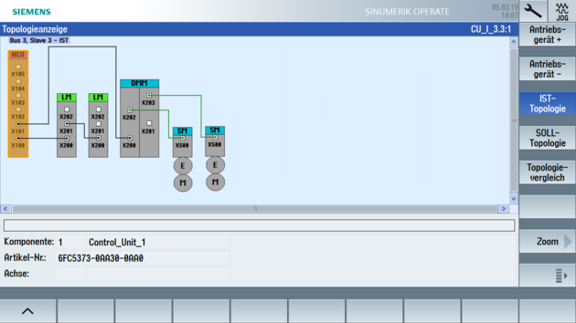

Voraussetzung
SINAMICS S120 unterstützt das Parallelschalten von Line Modules unter folgenden Voraussetzungen:
-
Gleicher Typ
-
Gleiche Typleistung:
Verfügbar für folgende Active Line Modules: 55, 80 und 120 kW
-
Gleiche Bemessungsspannung
-
Gleiche Firmware-Version
Um zwei Active Line Modules Booksize parallel zu schalten, ist die Versorgung mit einem gemeinsamen Netzanschluss und die synchrone Steuerung über eine gemeinsame Control Unit notwendig. Der Anschluss der beiden Module in Parallelschaltung an galvanisch getrennte Netze ist nicht zulässig.
Nutzen
Einige Anwendungen erfordern aus Platzgründen den Einsatz von Line Modules Booksize, aber der verfügbare Leistungsbereich mit einem einzelnen Line Module Booksize reicht für die Anwendung nicht aus.
Die Parallelschaltung von Active Line Modules Booksize bietet folgende Vorteile:
-
Erweiterung des Leistungsspektrums durch höhere S1- und Maximalleistungen für S120 Booksize
-
Höhere maximal vorladbare Zwischenkreiskapazität bis 38 mF
-
Es ist nur ein gemeinsamer Zwischenkreis mit Energieaustausch aller angeschlossenen Antriebe notwendig.
-
Nutzbar im Active Mode, Smart Mode und Extended Smart-Mode der Einspeisung
-
Die Inbetriebnahme ist einfach, da keine zusätzliche Parametrierung notwendig ist.
-
Der Inbetriebnehmer sieht nur ein größeres Active Line Module.
-
Bei der Inbetriebnahme und Datensicherung entsteht kein zusätzlicher Aufwand.
-
Topologie
Wählen Sie Bedienbereich "Inbetriebnahme" → Softkey "Antriebssystem" → Softkey "Topologie". In der Topologie-Ansicht werden die beiden Line Modules dargestellt:
Parallel geschaltete Einspeisungen
Das System erkennt, dass die Einspeisung noch nicht in Betrieb genommen und eine Erst-Inbetriebnahme erforderlich ist:
|

Einspeisungsparameter prüfen
Unter Softkey "Maschinendaten" → Softkey "Einspeisungsparameter" können Sie die Einstellung folgender Parameter prüfen:
Parameter | Bedeutung |
|---|---|
p0108.15 = 1 | Funktionsmodul Parallelschaltung aktiviert |
r0200[0] r0200[1] … r0204[0] r0204[1] | Leistungsteil Codenummer aktuell vom ersten ALM Leistungsteil Codenummer aktuell vom zweiten ALM … Leistungsteil Hardware-Eigenschaften vom ersten ALM Leistungsteil Hardware-Eigenschaften vom zweiten ALM |
r7000 = 2 p7001[0] = 1 p7001[1] = 1 … | Parallelschaltung Anzahl aktive Leistungsteile Parallelschaltung Freigabe Leistungsteile Parallelschaltung Freigabe Leistungsteile |
Weitere Informationen finden Sie in:
SINAMICS S120 Funktionshandbuch Antriebsfunktionen, Kapitel "Funktionsmodule" → "Parallelschaltung von Leistungsteilen".
SINAMICS S120 Applikationsbeispiel "Parallelschaltung Active Line Modules Booksize"